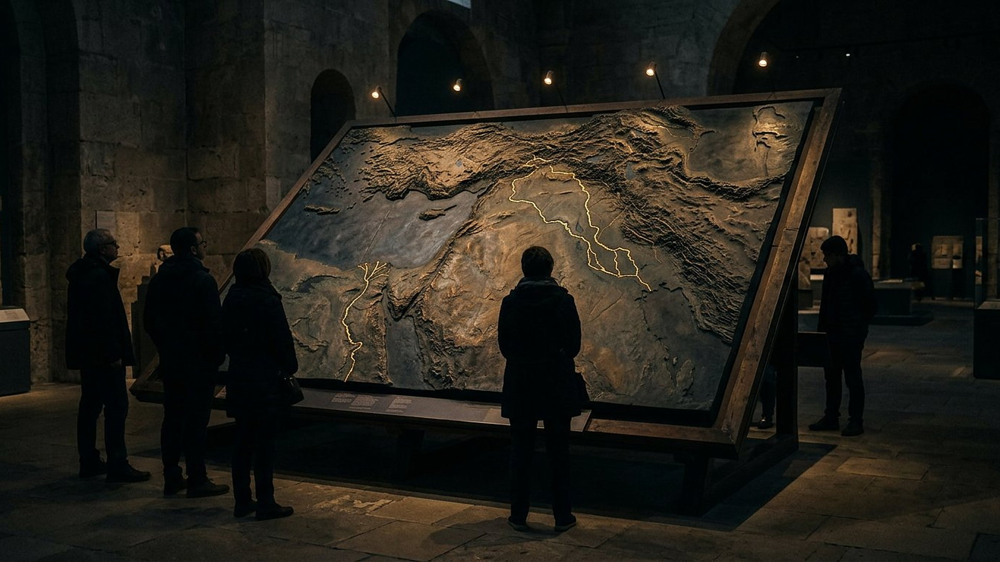

Babylone
ruines, UNESCO 2019
Coordonnées : 32.542° N, 44.421° E
Salle 02 — Babylone et Cyrus : le conquérant nommé avant sa naissance · Salle 06 — Jérusalem, l'exil et les 70 ans

Annexe
Dix lieux, de Rome à Babylone : là où les annonces ont rencontré le sol.
Reconstitution numérique — la carte en relief du musée.
Projection schématique (coordonnées réelles, fond simplifié). La liste ci-dessous donne chaque lieu, son état actuel et ses salles.
ruines, UNESCO 2019
Coordonnées : 32.542° N, 44.421° E
Salle 02 — Babylone et Cyrus : le conquérant nommé avant sa naissance · Salle 06 — Jérusalem, l'exil et les 70 ans
presqu'île (tombolo), port de pêche
Coordonnées : 33.27° N, 35.196° E
monticules herbeux
Coordonnées : 36.36° N, 43.152° E
site nabatéen puis abandonné
Coordonnées : 30.328° N, 35.444° E
Salle 05 — Édom, Égypte, Philistie : le sort des nations annoncé
parc archéologique côtier
Coordonnées : 31.669° N, 34.571° E
Salle 05 — Édom, Égypte, Philistie : le sort des nations annoncé
ville habitée, couches antiques fouillées
Coordonnées : 31.768° N, 35.214° E
Salle 06 — Jérusalem, l'exil et les 70 ans · Salle 09 — Le Messie : plus de 30 détails annoncés · Salle 11 — Jérusalem, an 70 : Jésus avait prévenu
ville habitée
Coordonnées : 31.705° N, 35.202° E
parc archéologique
Coordonnées : 32.5° N, 34.899° E
site archéologique
Coordonnées : 32.45° N, 35.616° E
monument in situ
Coordonnées : 41.891° N, 12.488° E